Kato, Hyogo: things to do, food and stays
Kato · Hyogo
Kato
Highlighted on the Hyogo map.
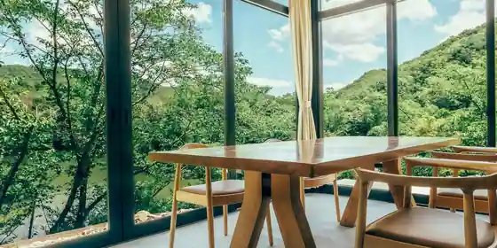
Stay
GLAMP CABIN 東条湖・丹波篠山
GLAMP CABIN Tojo Mizumi Tanba Shinoyama
Inn in Shimogamokawa, Kato with lakeside location.
ホテルルートイン加東
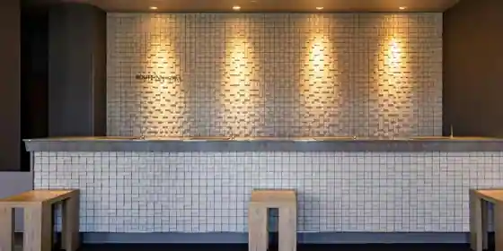
Hotel Route Inn Kato
Hotel at Danjobetsujinko Onsen in Kaminaka, Kato with a large communal bath.
ログキャビン フリーライド
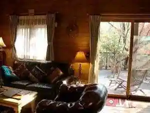
Rogukyabin Furiraido
Inn in Kaifuchi, Kato with one group per day and lakeside location.
ホテルグリーンプラザ東条湖
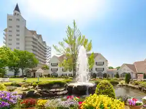
Hotel Gurin Plaza Tojo Mizumi
Hotel in Kaifuchi, Kato with family-friendly stays and lakeside location.
東条湖グランド赤坂
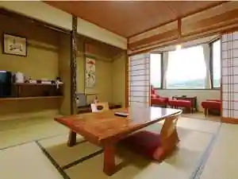
Tojo Mizumi Grand Akasaka
Inn in Kurotani, Kato with private baths and family-friendly stays.
やしろ鴨川の郷
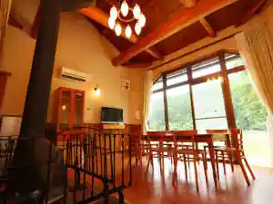
Yashiro Kamogawa No Sato
Dining
肉料理 二月九日
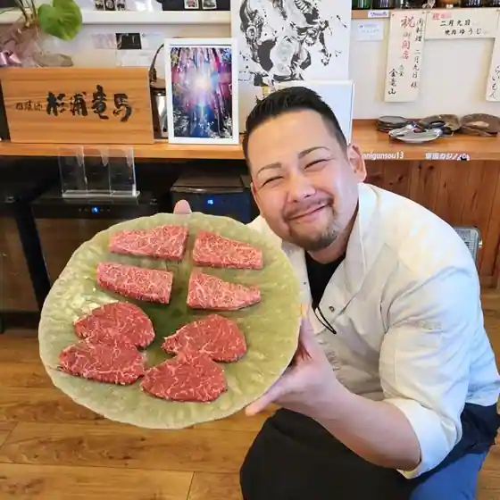
Nikuryori Nigatsu Kokonoka
紫川ラーメン
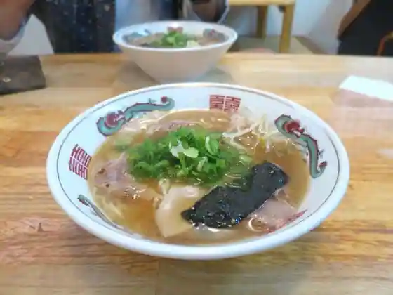
Murasakigawa Ramen
大橋中華そば
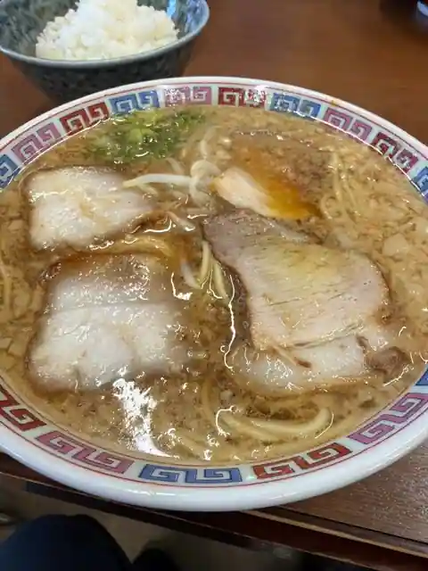
Ohashi Chuka Soba
長浜ラーメン
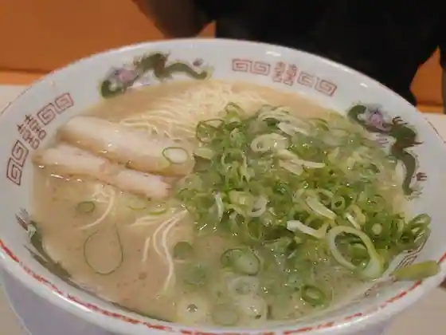
Nagahama Ramen
麺屋 志玲
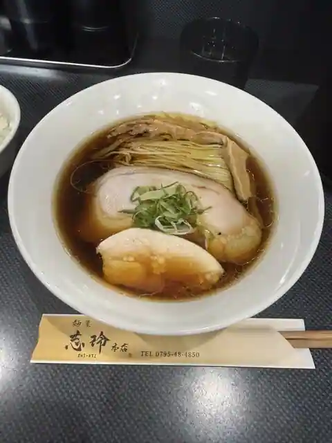
Men Ya Kokorozashi Rei
ブリランテ
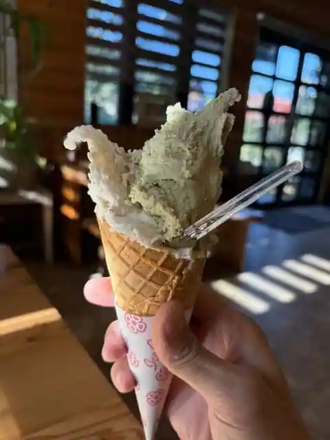
Burirante
がいな製麺所 ぽかぽ店
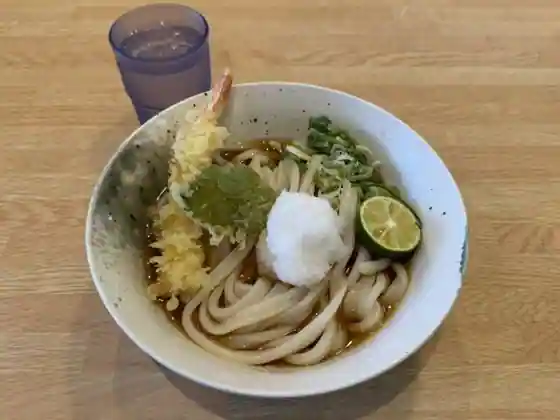
Gaina Seimen Tokoro Pokapo
ABCゴルフ倶楽部
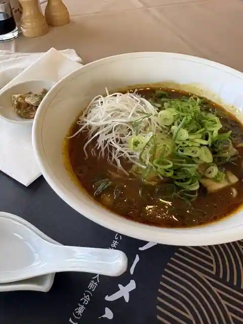
ABC Gorufu Kurabu
獅子銀 道の駅とうじょう店
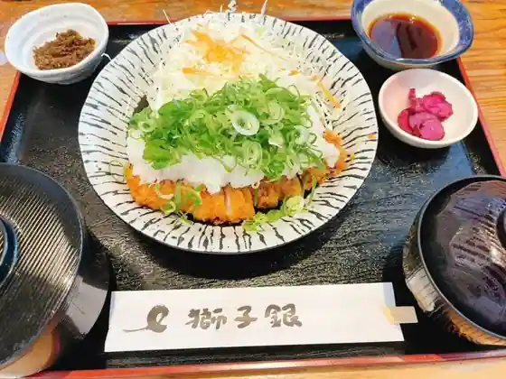
Shishi Gin Michi No Eki Tojo
房舎
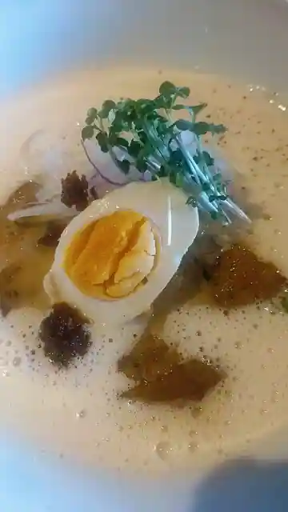
Bosha
麺や れいり
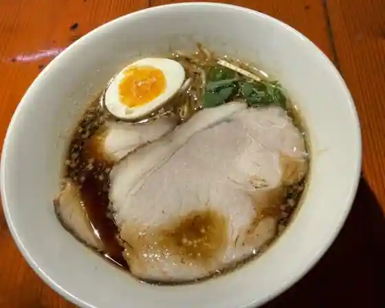
Men Ya Reiri
Eiger 加東店
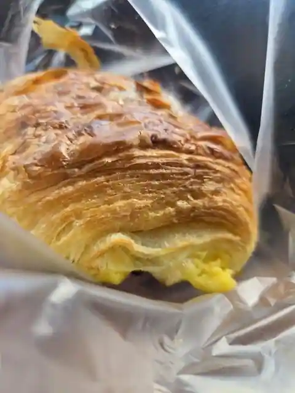
Eiger Kato
シャレード
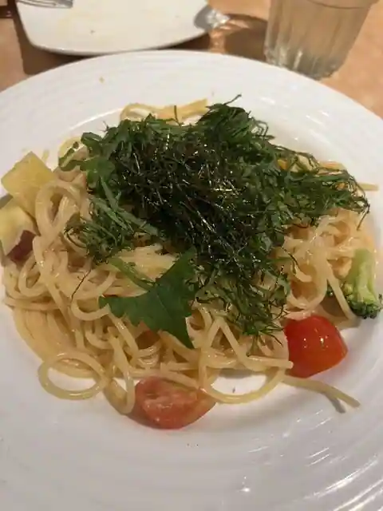
Sharedo
末永
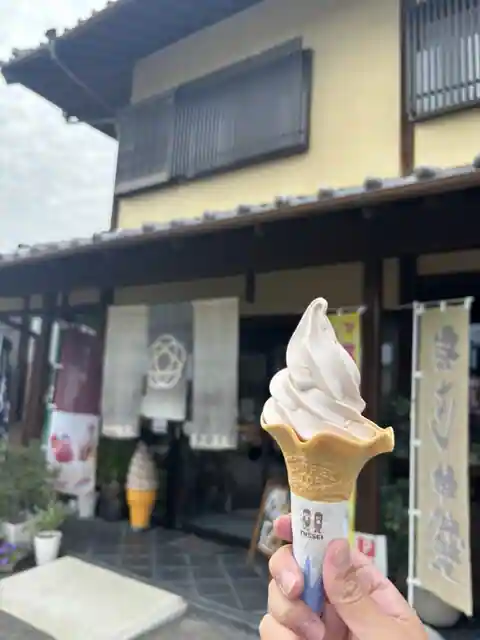
Suenaga
小さな森の喫茶店 レストラン ワイルドダック
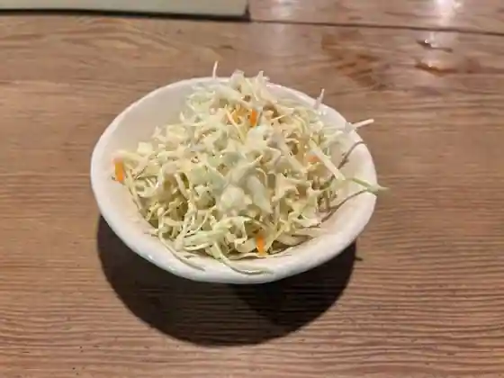
Chisa Na Mori No Kissa Restaurant Wairudodakku
手打ちうどん 孫心
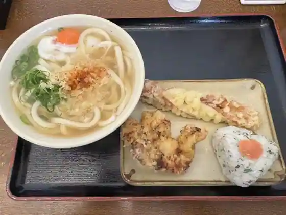
Teuchi Chiudon Mago Kokoro
東条の森カントリークラブ 東条コースレストラン
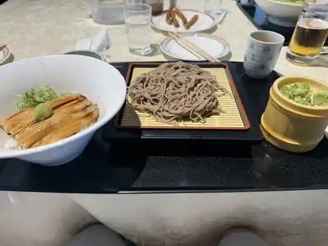
Tojo No Mori Kantorikurabu Tojo Kosu Restaurant
社パーキングエリア（下り線）スナックコーナー
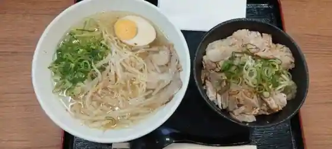
Sha Pakingueria (Kudari Sen) Sunakkukona
レークスワンカントリー倶楽部レストラン
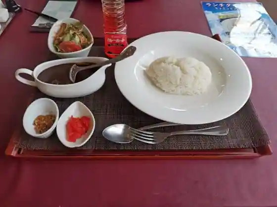
Rekusuwankantori Kurabu Restaurant
東条湖カントリー倶楽部
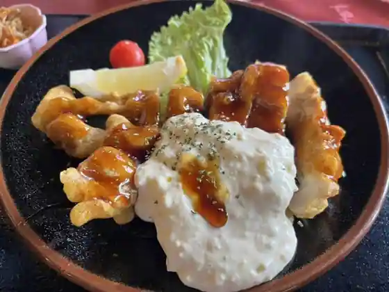
Tojo Mizumi Kantori Kurabu
きせつ屋 ひだまり
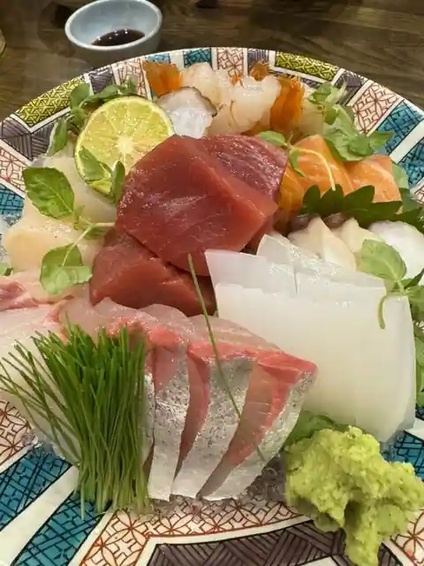
Kisetsu Ya Hidamari
駅ラーメン 華
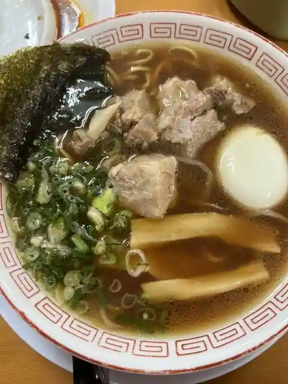
Eki Ramen Hana
福仙
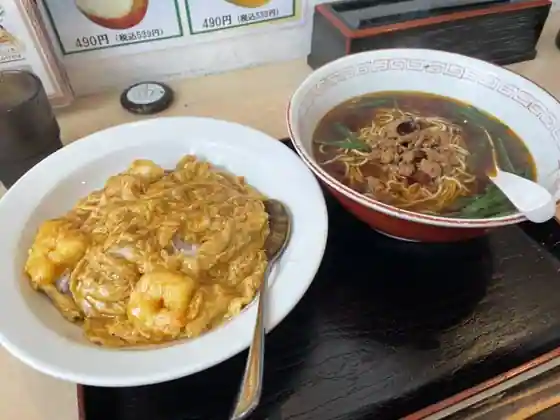
Fuku Sen
東条パインバレーゴルフクラブ レストラン
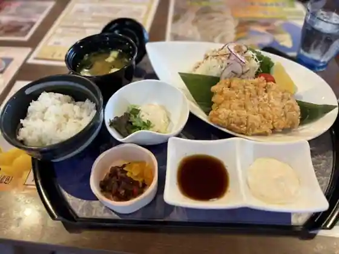
Tojo Painbaregorufukurabu Restaurant